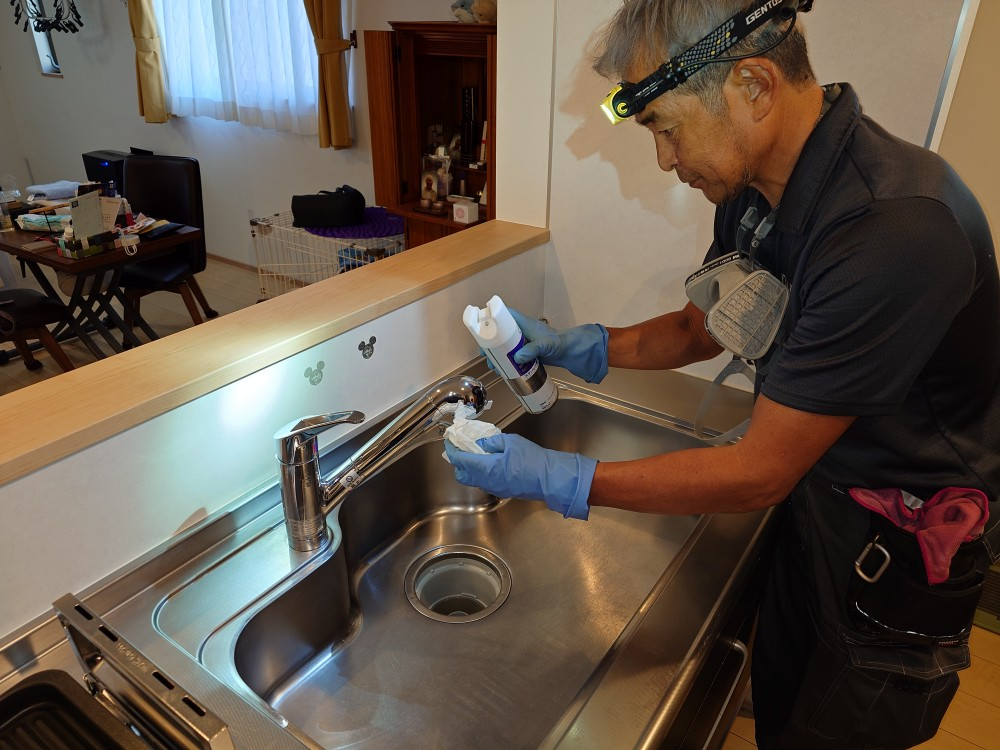
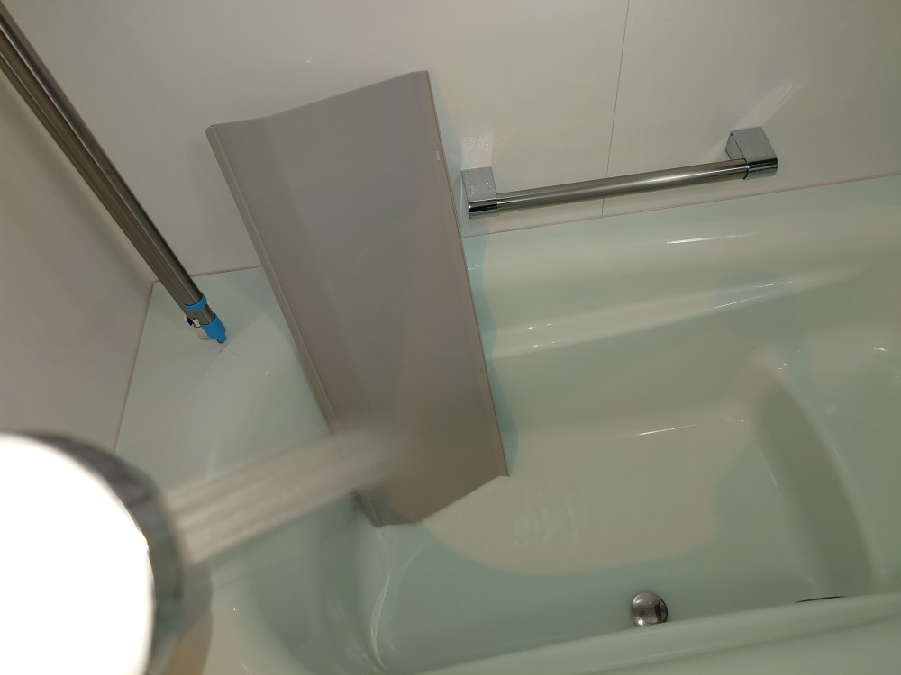
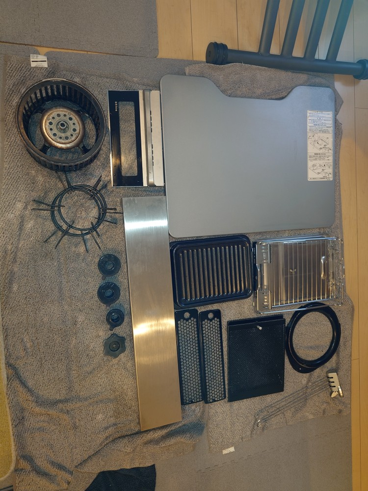
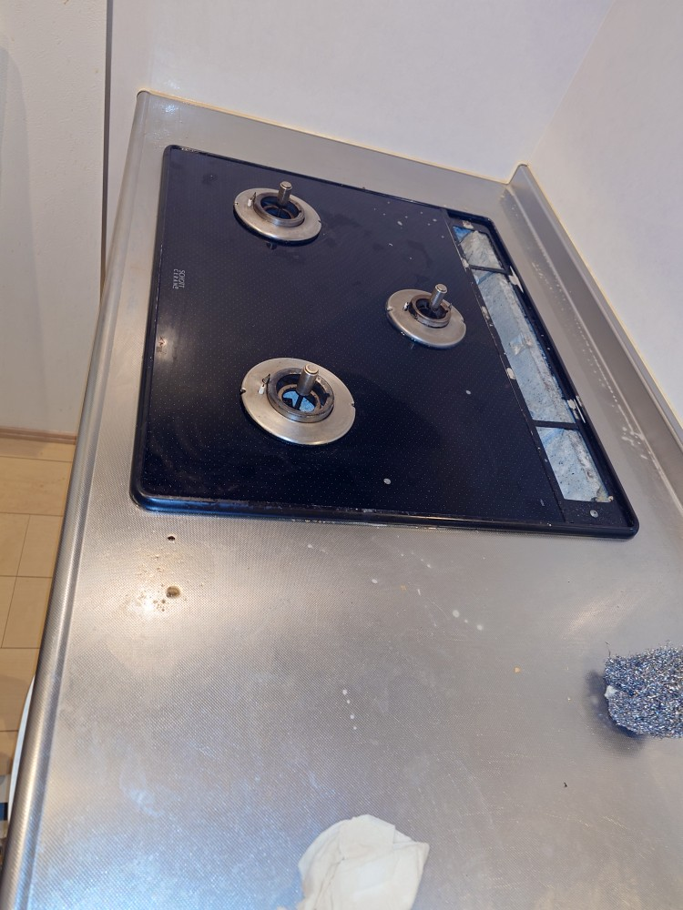
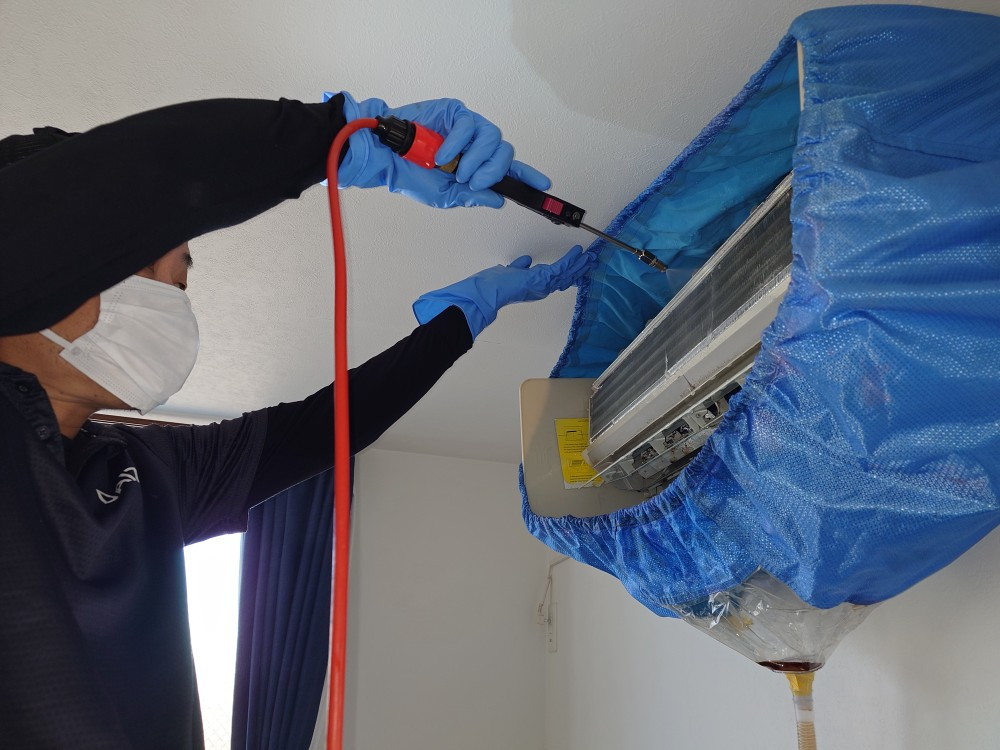
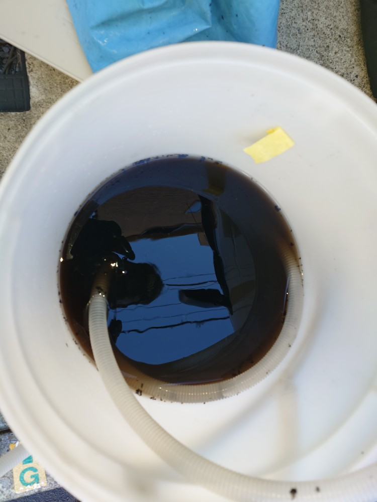
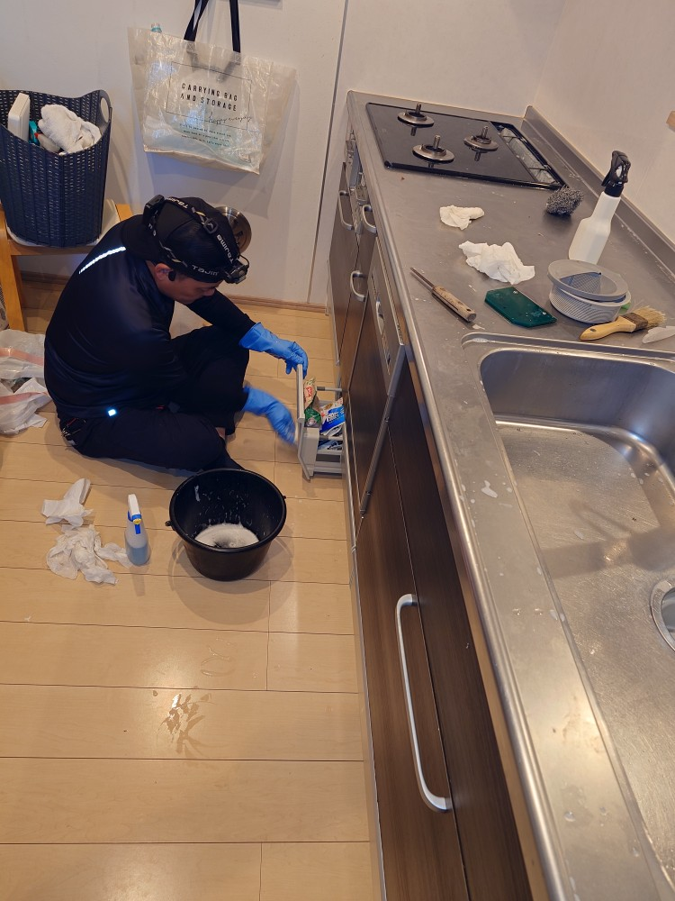
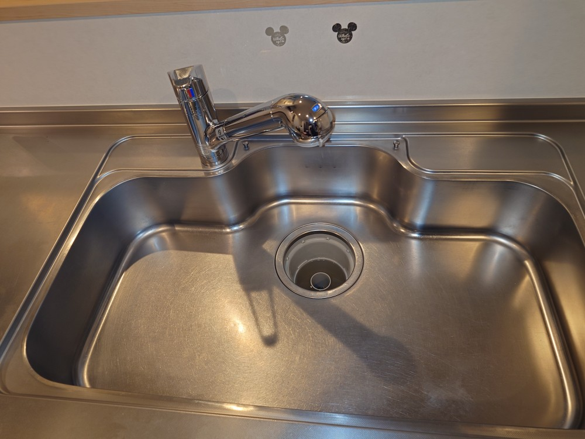
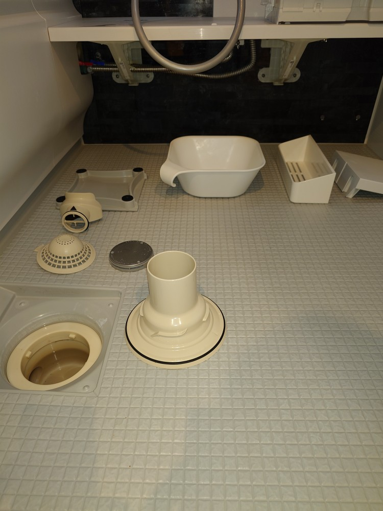

東京都墨田区のリピーターＯさんご自宅の年末大掃除水回りクリーニングとエアコン内部洗浄クリーニングをしました!

東京都墨田区のリピーターＯさんのご自宅年末大掃除を実施しました!今回の清掃はDAIZENプロフェッショナルメソッドを駆使した水回りプレミアムクリーニングと2台のエアコン内部洗浄クリーニングです。Ｏさんご自宅はDAIZENが年に2回の定期清掃クリーニングを実施しております！前回夏前のエアコンクリーニングでしたが、夏場を越えたエアコンは内部にカビ汚れが堆積し始めておりましたので、しっかりと内部洗浄クリーニング、内部除菌クリーニングを実施しました!水回りも半年に1度の頻度で完全分解洗浄クリーニングを実施しておりますので、内部の堆積汚れ、キッチン換気扇の油汚れの堆積量もそれほど重篤では無く、いつも通り、見る見る綺麗に元の美しさを取り戻し、スッキリと綺麗になりました!ぜひDAIZENプロフェッショナルメソッドを駆使した、定期清掃クリーニングの実施をおすすめします！







